Use scipy.interpolate.RectBivariateSpline to interpolate the color in the case of not landing
right on pixel grid.
Image Rectification
original
warped to left
warped to right
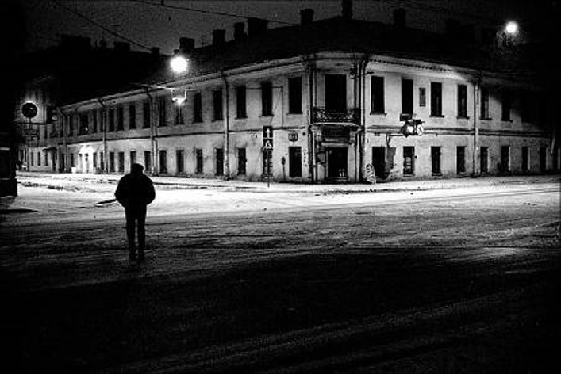
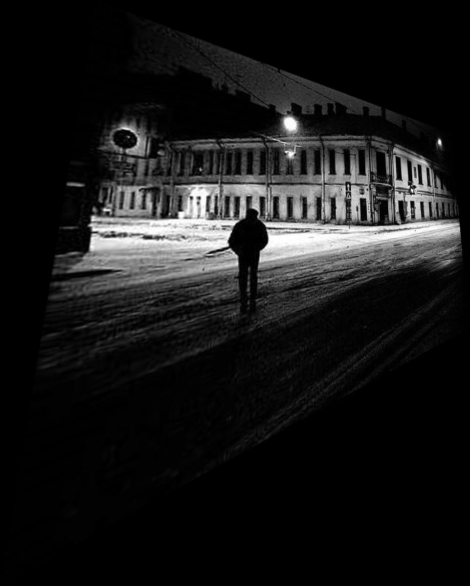
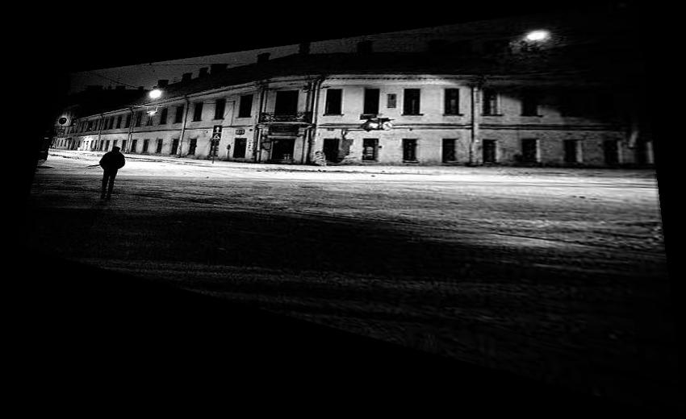
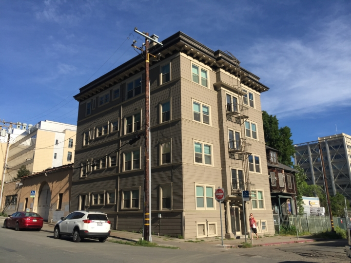
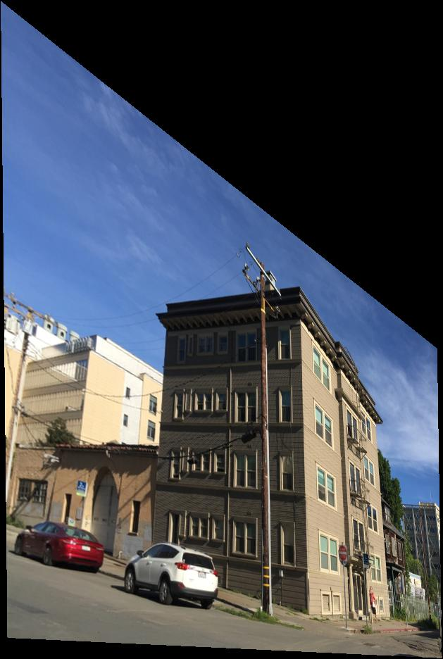
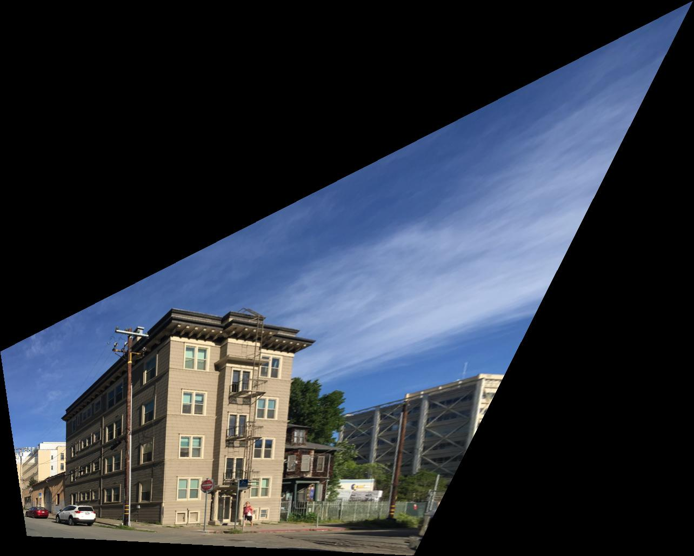
Blend the Images into a Mosaic
original
mosaic
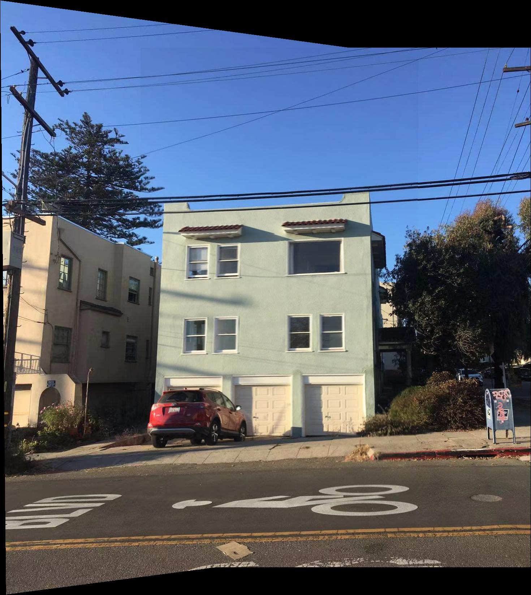
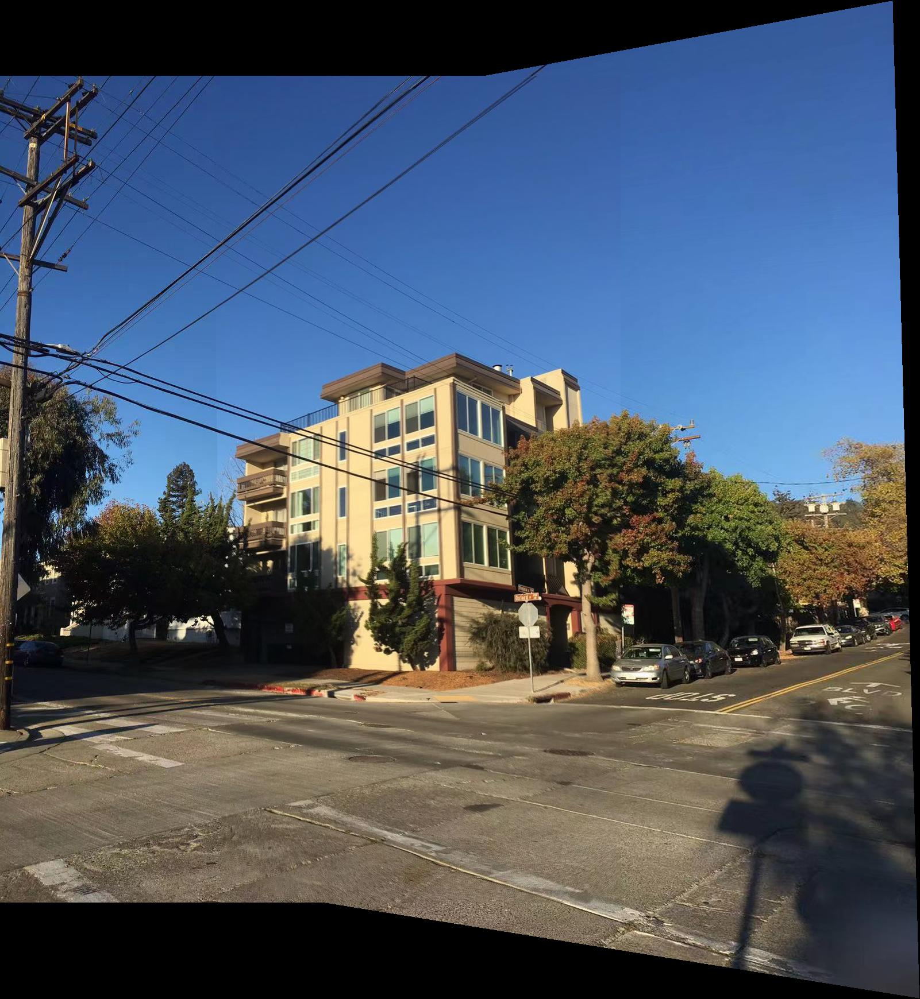
Part 2: Feature Matching for Autostitching
Harris Interest Point Detector
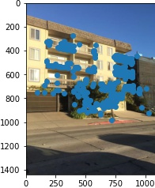
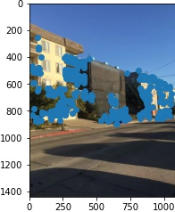
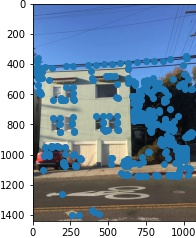
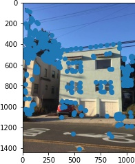
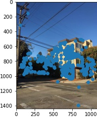
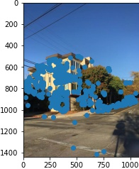
Adaptive Non-Maximal Suppression
Choose interest points from the corners found from the Harris detector only when they are not too close to each
other. Prioritize the points with higher corner strength.
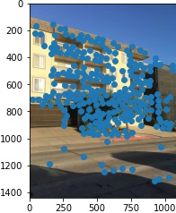
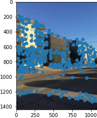
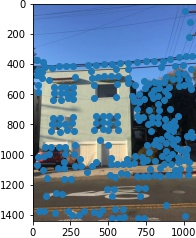
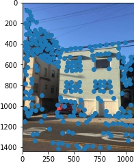
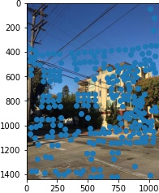
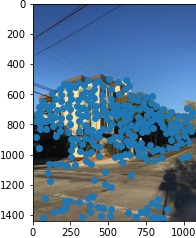
Feature Descriptor Extraction
For each interest point, subsample a 8*8 patch from the 40*40 patch around it and normalize it.
Feature Matching
Use Lowe's method:
For every point in the left image, use the sum of squared differences to score the pairing with each point
in the right image.
Consider the pairing only when the best pairing in the right image is much better than the second best
pairing in the right image.
The threshold is chosen to be best/second_best < 0.7 by Figure 6b in the paper.
The Lowe's are in orange.
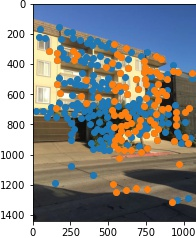
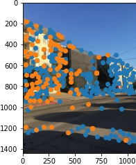
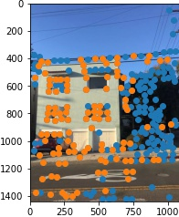
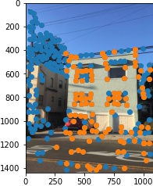
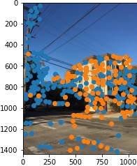
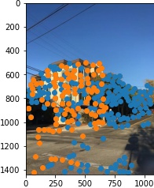
Robust Homography Estimate
Use 4-Point RANSAC:
Randomly choose 4 points and use their Lowe's correspondence in the other image to compute the homography.
Record the number of Lowe's pairs that agree with this homography with epsilon.
Chosse the homography that has the most agreement with the rest of the Lowe's pairs.
The RANSAC are in green.
The photos are not well taken because the features concentrate on one side, so with small epsilons there are no
points counting for the other side of the image, and the mosaic result is not ideal. Improve with larger
epsilon.
With large epsilon = 1000:
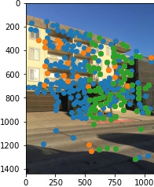
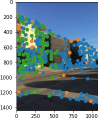
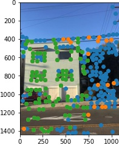
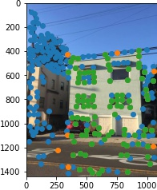
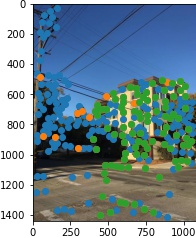
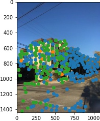
Mosaic result:
manual stitching
auto stitching
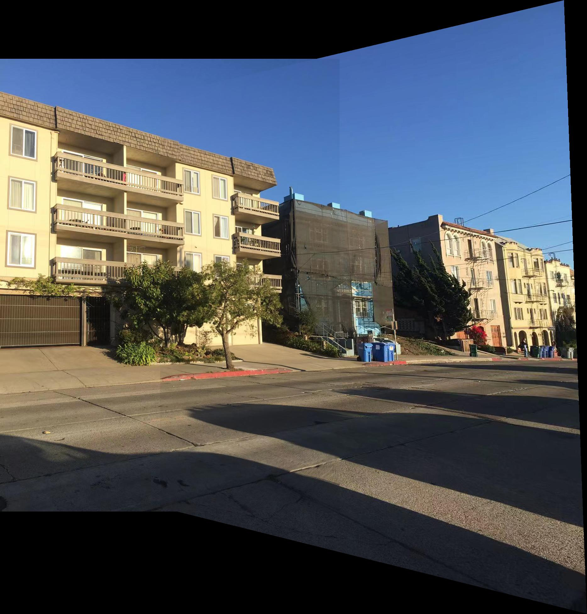
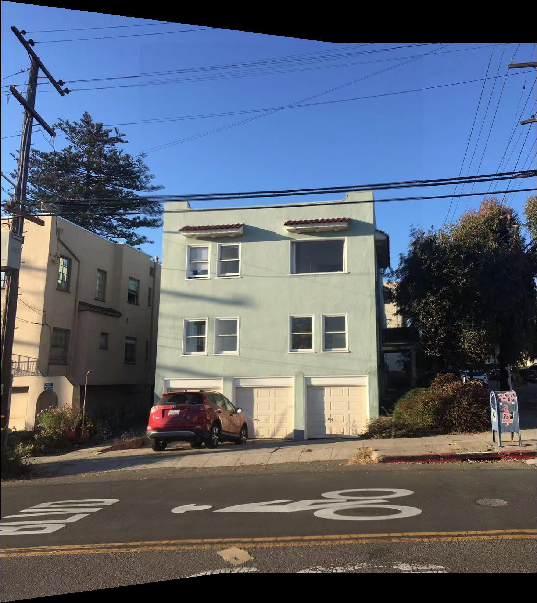
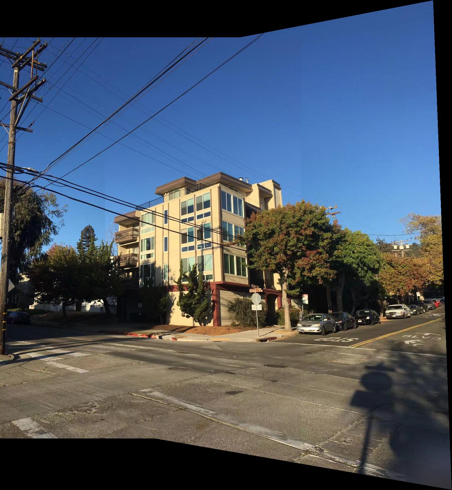
Reflection
The photos are not well taken because the features concentrate on one side, so during the process it is hard to
give both sides with equal attention. Though it is reminded to take photos with rich features, I did not fully
understand that the features should expand the whole space.